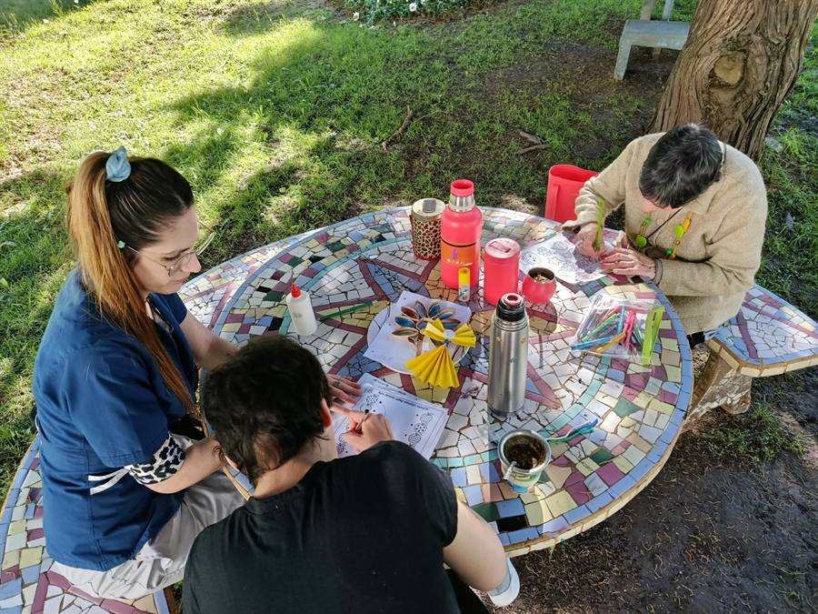
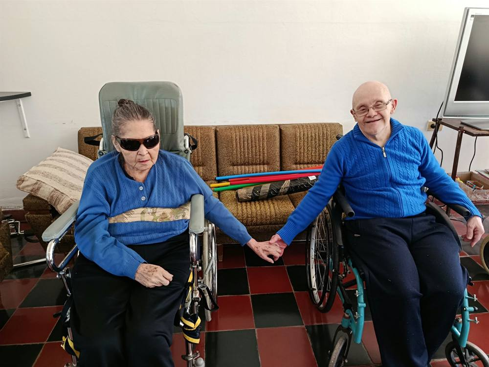
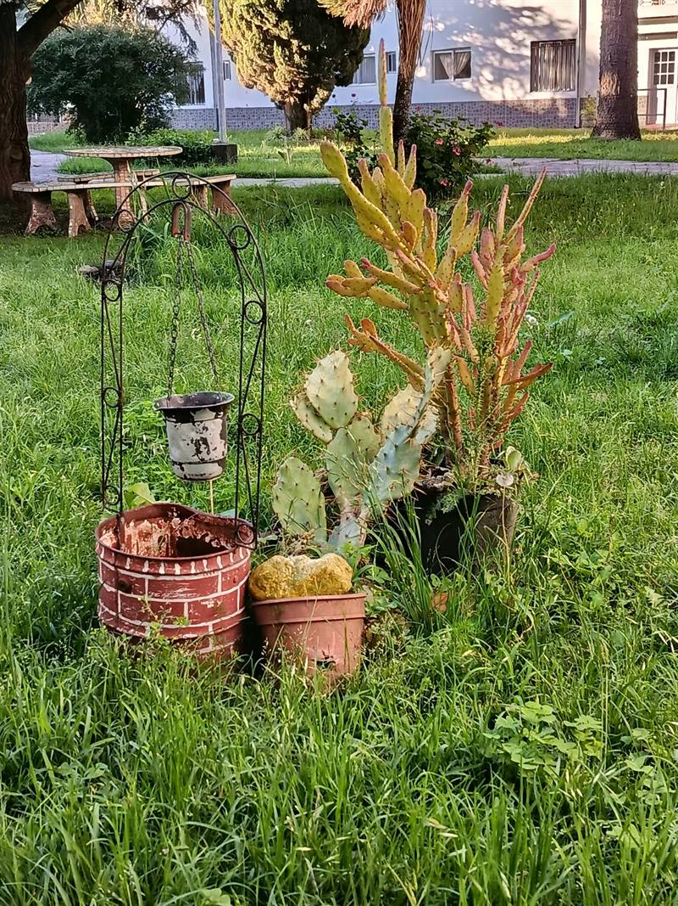
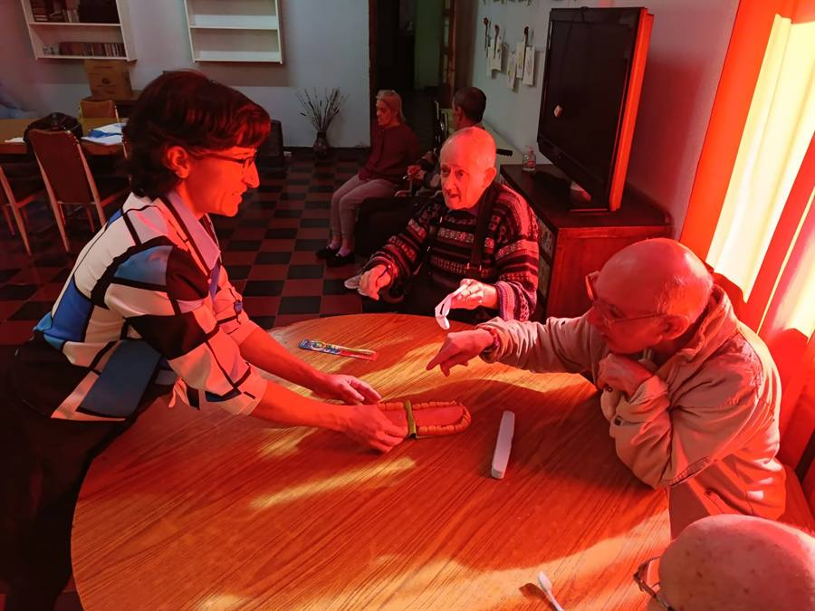
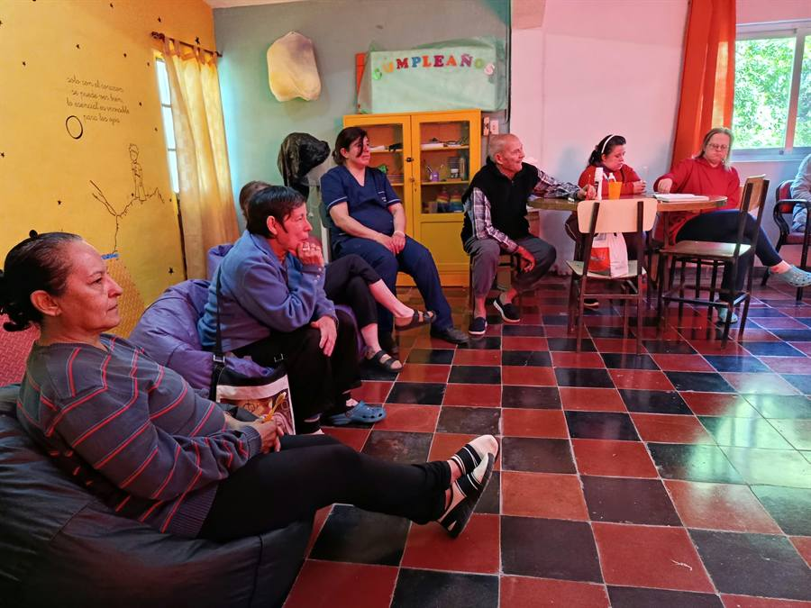
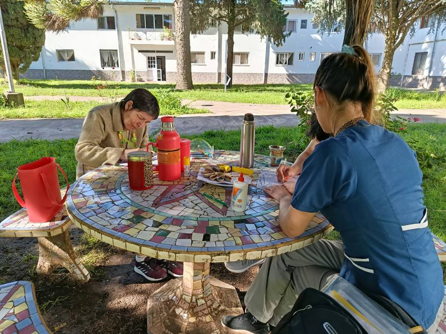
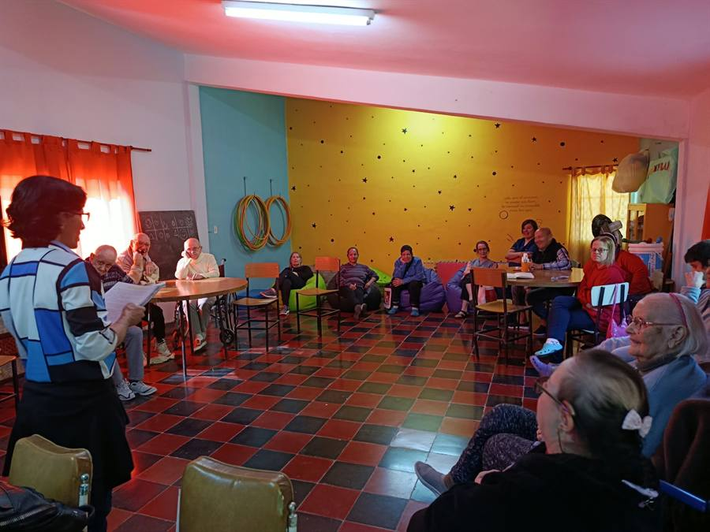
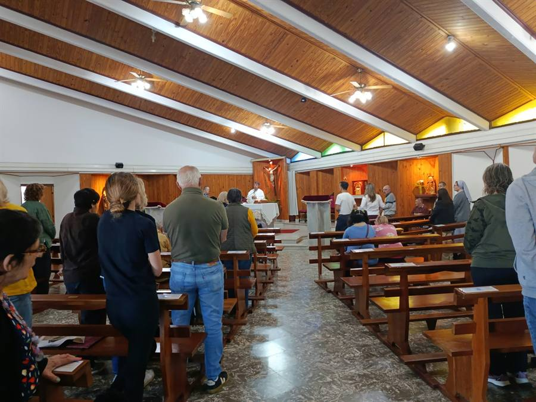

Arte y Expresión Plástica
Pintura, dibujo, cerámica y manualidades que estimulan la motricidad fina, la creatividad y la autoestima.
Un modelo de atención integral que abarca la dimensión biológica, psicológica, social y espiritual de cada residente.
Cada residente no es un número ni un paciente: es una persona única con nombre propio, historia, afectos y potencialidades. Acompañamos la vida cotidiana de personas adultas con discapacidad y adultos mayores, promoviendo su autonomía posible, su autodeterminación y su participación activa en la vida de la casa.

Abordamos a la persona en todas sus dimensiones a través de prestaciones integrales.
Residencia asistida con acompañamiento personalizado en todas las actividades de la vida diaria durante los 365 días del año.
Control clínico periódico, gestión farmacológica segura y enfermería las 24 horas.
Kinesiología motora y respiratoria, terapia ocupacional para el mantenimiento de habilidades cotidianas y estimulación fonoaudiológica, en sesiones individuales y grupales.
Menús diarios supervisados por licenciados en nutrición, elaborados en nuestra cocina y adaptados a cada requerimiento clínico (dietas blandas, hiposódicas, para diabéticos, suplementación).
Contención emocional a residentes, orientación a familias y articulación con obras sociales, organismos públicos y redes comunitarias.
Respeto profundo por la libertad de conciencia y fe de cada residente, con espacios de oración, sacramentos y acompañamiento espiritual.
Una vida plena necesita movimiento, creatividad, alegría y encuentro. Por eso desarrollamos un calendario semanal de actividades terapéuticas, recreativas y culturales.

Pintura, dibujo, cerámica y manualidades que estimulan la motricidad fina, la creatividad y la autoestima.

Contacto con la tierra y el cuidado de plantas, promoviendo la responsabilidad y el disfrute sensorial.

Juegos de mesa, lectura compartida, ejercicios de atención, lenguaje y reminiscencia guiados por profesionales.

Expresión corporal, ritmos y folclore que despiertan emociones positivas y fortalecen la socialización.

Cumpleaños mensuales, fechas patrias, peñas folclóricas y eventos especiales.

Salidas a espacios culturales, parques y eventos de Río Cuarto con acompañamiento profesional y voluntario.

Colegios, parroquias, grupos juveniles e instituciones comparten jornadas de juegos, música y amistad.

Misas en nuestra Capilla, adoración, Rosario y fiestas de San Luis Orione y Santa María Rosa Molas.